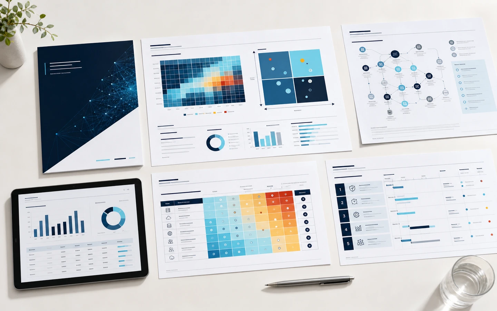
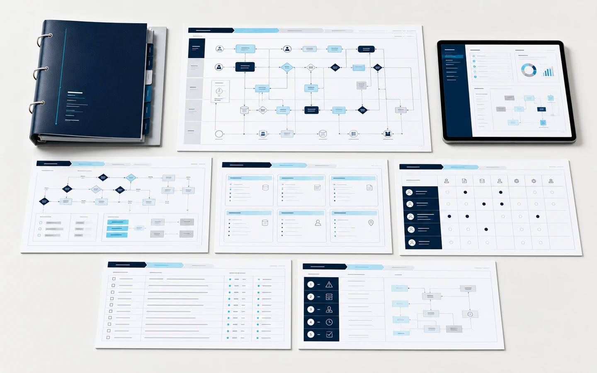
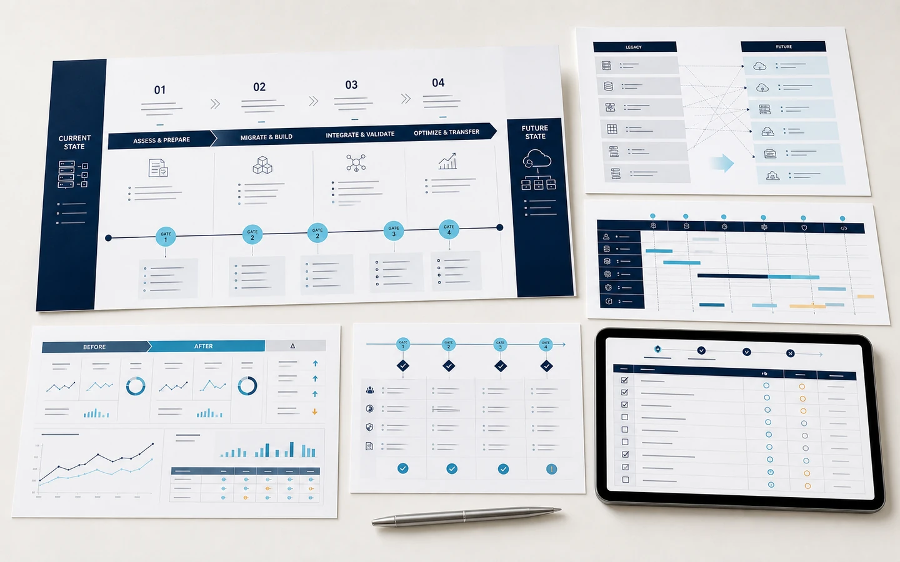
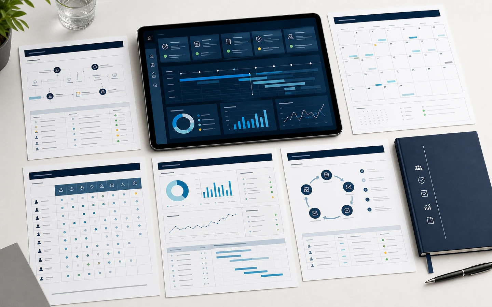

実務が担当者の頭の中にある
通常手順だけでなく、例外条件や判断理由、確認先まで一人の経験に依存している。

会社に積み重なった業務ルール、データ、システム、判断の知恵。見えないまま埋もれた価値を読み解き、次の人が使い、検証し、育てていける経営資産へ変える。これが、私たちのデジタル事業承継です。
OUR VIEW
特定の担当者しか回せない業務は、その人が仕事を抱え込んだから生まれるわけではありません。例外対応が増えるたびに、記録するより口頭で確認したほうが速い状態が続き、判断の根拠だけが個人の中に積み上がっていきます。担当を替えても、マニュアルを増やしても同じ状態が戻るのは、この構造がそのまま残っているからです。
人を責めても、教育を足しても解決しません。判断の残り方そのものを変える必要があります。
OUR MISSION
会社の価値は、
決算書だけでは
引き継げません。
会社を動かしている判断と手順を、
個人の中から会社の中へ。
長年かけて磨かれた判断も、日々の仕事を支えている手順も、その多くは個人の中にあります。人が替わればそれは失われ、会社は少しずつ動けなくなります。
私たちは、会社に積み重なってきた判断と仕組みを、次の担い手が理解し、実行し、育てていける形へ移します。企業が続き、地域の仕事が続いていくために。
JAPAN'S SUCCESSION GAP
日本では、経営者と働き手の世代交代が同時に進んでいます。しかし、株式や設備を引き継いでも、現場の判断、データ、古いシステムの仕様が一人の頭の中にあれば、事業は実質的に承継できません。私たちは、この「見えない承継の空白」に挑みます。
通常手順だけでなく、例外条件や判断理由、確認先まで一人の経験に依存している。
数式、VBA、Access、CSV、手作業がつながり、何を変えると何が壊れるか分からない。
株式や契約は承継できても、受注から入金までの実務や復旧方法が次の人へ渡っていない。
残す価値、捨てられる処理、既製サービスに置き換えられる範囲が判断できない。
提供サービス
いきなり新しいシステムを作るのではなく、まず現状を可視化します。判断材料と成果物を段階ごとに残し、経営と現場が確認しながら、安全に次の仕組みへ移行します。

止まると影響が大きい業務と、その業務を支える担当者・ファイル・システムを特定します。停止時の影響と復旧の難易度を評価し、対応の優先順位を決めます。

実際の入出力、担当者へのヒアリング、現場観察から、通常処理・例外対応・判断基準を整理します。次の担当者が同じ結果を再現・検証できる形にまとめます。

現行業務を「残す・置き換える・廃止する」に整理し、優先度の高い範囲から小さく移行します。新旧の結果を比較しながら、安全に切り替えます。

バックアップ、テスト、権限、仕様変更を定期的に確認します。異動・退職・業務変更に合わせて、引き継ぎ資料と検証内容を更新します。
業界ごとの課題・支援範囲・導入後の変化は、各事業LPで詳しくご覧いただけます。
業界別の事業を見る ↓
現場の実物、実データ、会話をつなぎ、暗黙の判断を経営資産へ変えます。
RESCUE PROCESS
原本を守りながら、Excel、VBA、Access、データ、帳票、外部連携、手作業を集めます。
通常・例外ケースを再現し、条件、計算、優先順位、根拠、未確認事項を構造化します。
現行結果を比較基準として残し、廃止・置換・延命・再構築に分類します。
業務単位で安全に切り替え、次の担当者が理解・検証・復旧できる一式を納品します。
SOLUTION FIELDS
デジタル事業承継という考え方は共通でも、残すべき判断や業務資産は業界ごとに異なります。現場の言葉と商習慣まで理解した、業界別の事業として具体化します。
CONTACT
退職や世代交代が決まってから動き出すと、確認できることは限られます。“あの人”が現場にいる今のうちに、重要業務と判断ルールを会社の仕組みへ移し、誰が担当しても同じ結果を出せる状態をつくります。